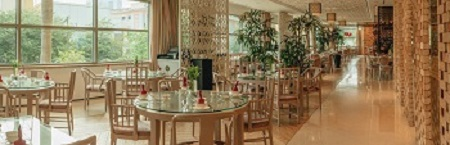
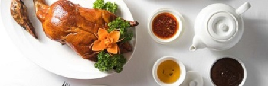
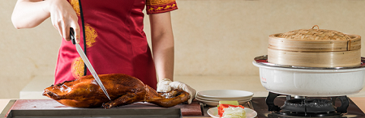
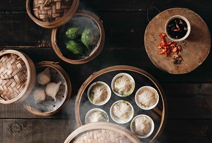

YU CHU

“Ngự Trù” hay “Bếp của Hoàng Đế” trong Tiếng Việt, nhà hàng Yu Chu thuộc InterContinental Saigon chuyên phục vụ ẩm thực Quảng Đông và Bắc Kinh, tọa lạc ngay trung tâm quận 1, thành phố Hồ Chí Minh. Được trang trí theo phong cách hiện đại và hoàn mỹ, cùng những món ăn đặc sản Trung Hoa sang trọng do các đầu bếp lành nghề tự tay chế biến, dim sum và mì kéo tay ở đây sẽ khiến bạn muốn gọi thêm lần nữa. Bên cạnh hương vị đẳng cấp, thực khách sẽ còn trầm trồ bởi những màn lửa bùng lên và dao sắc lấp loáng trong căn bếp mở chỉ cách đó vài mét.
YU CHU MENU
YU CHU MENU

Thưởng thức món Vịt quay Bắc Kinh thượng hạng tại nhà hàng Yu Chu thuộc InterContinental Saigon - Nhà hàng Trung Hoa tại trung tâm quận 1. Chiêm ngưỡng tài nghệ chế biến khéo léo của đội ngũ đầu bếp tài hoa qua các món ăn đặc sắc như da vịt cuốn bánh bía, thịt vịt chiên tỏi ớt, thịt vịt bằm xào, súp thịt vịt rau củ, mì xào thịt vịt và cơm thịt vịt xé.
• Nguyên liệu địa phương tươi ngon nhất
• Phương pháp chế biến đa dạng
• Phòng ăn riêng cho các buổi tụ họp gia đình hoặc các sự kiện đặc biệt
• Không gian bếp mở để chiêm ngưỡng các đầu bếp chế biến những món ăn thượng hạng
Giá từ VND 600.000++ MỘT CON
• Nguyên liệu địa phương tươi ngon nhất
• Phương pháp chế biến đa dạng
• Phòng ăn riêng cho các buổi tụ họp gia đình hoặc các sự kiện đặc biệt
• Không gian bếp mở để chiêm ngưỡng các đầu bếp chế biến những món ăn thượng hạng
Giá từ VND 600.000++ MỘT CON

Vịt quay từ lâu đã là một trong những món ăn đặc trưng của ẩm thực vùng Quảng Đông. Bằng sự sáng tạo của mình, các đầu bếp tại Yu Chu đã nâng tầm món vịt quay thông thường bằng cách sử dụng hương vị thanh khiết của trà Ô Long và xông khói vào thịt vịt để gia tăng hương vị. Trà Ô Long đã không còn xa lạ với một trong những công dụng chính là an thần và giúp thư giãn tâm trí, kết hợp cùng thớ thịt vịt mềm và mọng nước sẽ mang đến cho bạn một món ăn không chỉ ngon mà còn bổ dưỡng.
Tận hưởng vị giòn tan của lớp da vịt với bánh tráng kiểu Trung Hoa. Để thưởng thức trọn vẹn hương vị thịt vịt quay trà Ô Long, Quý thực khách sẽ được lựa chọn món đi kèm như Thịt vịt xào với gừng hồng Nhật và thơm, Lá trà Ô long xào thịt vịt và xốt Sa Trà, Khổ qua xào thịt vịt miếng và xốt tàu xì hay Thịt vịt bằm xào với hạt thông và bắp hạt.
Giá từVND 1,180,000 ++ FOR WHOLE DUCK
Tận hưởng vị giòn tan của lớp da vịt với bánh tráng kiểu Trung Hoa. Để thưởng thức trọn vẹn hương vị thịt vịt quay trà Ô Long, Quý thực khách sẽ được lựa chọn món đi kèm như Thịt vịt xào với gừng hồng Nhật và thơm, Lá trà Ô long xào thịt vịt và xốt Sa Trà, Khổ qua xào thịt vịt miếng và xốt tàu xì hay Thịt vịt bằm xào với hạt thông và bắp hạt.
Giá từVND 1,180,000 ++ FOR WHOLE DUCK

Yu Chu - Nhà hàng Trung Hoa tại trung tâm quận 1 thuộc InterContinental Saigon mang đến cho bạn hơn 38 món ăn được chế biến từ những nguyên liệu tươi ngon nhất, thực đơn điểm sấm All You Can Eat Dim Sum Lunch của chúng tôi là lựa chọn hoàn hảo cho những buổi tụ họp gia đình và bạn bè và lí tưởng cho những người yêu thích điểm tâm. Đặc biệt, vào thứ bảy, Chủ Nhật bạn còn có thể chiêm ngưỡng các đầu bếp tài hoa trổ tài chế biến những món ngon với nhiều phương thức đặc sắc.
• 38 món điểm sấm làm từ những nguyên liệu tươi ngon nhất
• Có thực đơn chay
• Thực đơn Dim Sum Signature mới với những món ăn được trang trí đầy lạ mắt và hương vị độc đáo.
Tháng Mười Một này, vào dịp cuối tuần tại Yu Chu, những món ngon mới với tên gọi Rau Củ Dồn và một không gian bếp mở mới đã được thêm vào tiệc Trưa All You Can Eat.
• 38 món điểm sấm làm từ những nguyên liệu tươi ngon nhất
• Có thực đơn chay
• Thực đơn Dim Sum Signature mới với những món ăn được trang trí đầy lạ mắt và hương vị độc đáo.
Tháng Mười Một này, vào dịp cuối tuần tại Yu Chu, những món ngon mới với tên gọi Rau Củ Dồn và một không gian bếp mở mới đã được thêm vào tiệc Trưa All You Can Eat.